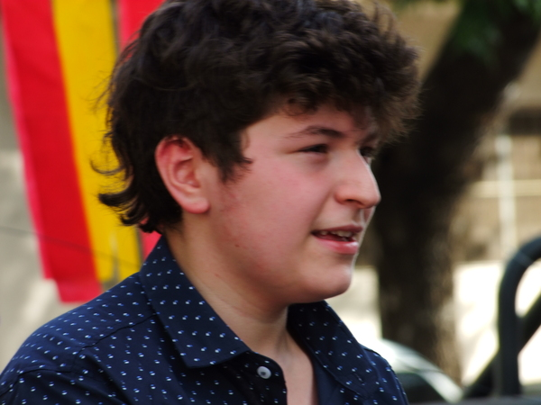

Ivo

Ivan Javier Efron, mejor conocido como Ivo, nació el 6 de noviembre de 2007 en el barrio de Villa Crespo. Toca la guitarra, armonica y canta. Fue al colegio "Rosario Vera Peñaloza", donde conoció a Joaquin Saidon y Teo Levin. Con ellos participó como invitado en la banda "Los troopers", donde estan sai y teo. Ivo estuvo en la banda "Por las dudas". En el año 2022, es invitado por sai a Ruido blanco por falta de cantante. Es fan de la Bersuit, Los piojos, Los visitantes entre otras bandas. Su comida favorita es el pollo de verdeo.